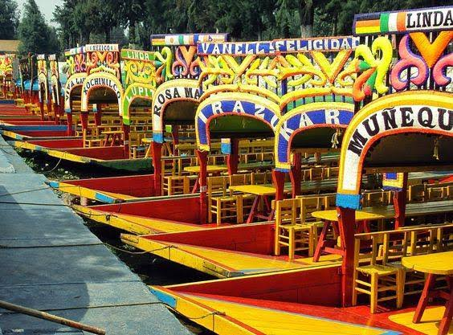

Canales de Xochimilco
Xochimilco es una fiesta flotante, una explosión de color y una ventana viva al pasado lacustre de los aztecas. Subir a una trajinera permite recorrer canales antiguos y jardines flotantes.
Historia y tradición
Sus chinampas y canales son una muestra del antiguo sistema agrícola de la cuenca de México. Las trajineras decoradas, los músicos y la comida tradicional hacen de este lugar una experiencia única para compartir.
